Estructura física d'un disc: Definició de la part física del maquinari (capçals, pistes, cilindres i sectors).
Estructura lògica d'un disc: Com s'organitza l'espai mitjançant taules de particions:
MBR (Master Boot Record): Esquema clàssic.
GPT (GUID Partition Table): Esquema modern.
Estructura de la informació
Partició (Físic): Divisió de l'espai cru sobre el disc físic.
Volum (Lògic): Espai accessible i gestionat pel sistema operatiu per emmagatzemar dades.
Sistemes de fitxers
El sistema de fitxers es col·loca damunt d'una partició quan es crea i se li dona format.
Mida del sector: Unitat mínima d'emmagatzematge en el disc dur a nivell físic. Ve definida de fàbrica i no es pot canviar.
Bloc: Unitat mínima d'emmagatzematge a nivell lògic. El sistema operatiu treballa a nivell de bloc i la seva mida sí que es pot canviar en formatar.
Fragmentació:
Interna: Quan l'espai d'un bloc no s'aprofita completament pel fitxer.
Externa: Fitxers dispersos pel disc; es soluciona passant les zones ocupades juntes i l'espai lliure a continuació per augmentar la velocitat de lectura.
Formats segons el sistema:
Windows: Històricament FAT / FAT32, i actualment NTFS.
Ubuntu: Format habitualment en ext4.
Tipus de formateig
Baix nivell: Defineix físicament pistes, sectors i cilindres. No es poden recuperar fitxers un cop fet.
Mig nivell: Crea l'estructura de particions (MBR o GPT).
Alt nivell: Aplica el sistema de fitxers (NTFS, ext4, FAT32). Esborra l'índex de gestió, de manera que les dades es poden recuperar si no s'han sobreescrit.
Figura 3.1 (Nivell 0 - Captura 1): Assignació de permisos d'execució als scripts.
Comandes executades:chmod +x backup_nocturn espia descarrega.sh sospitosos.sh i ls -l
Descripció: Executem la comanda chmod +x per donar permisos d'execució als scripts de la pràctica i després comprovem amb ls -l que ja apareixen amb els permisos corresponents.
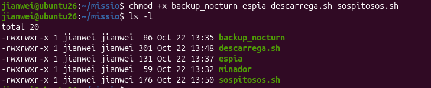
Figura 3.2 (Nivell 0 - Captura 2): Execució dels processos en segon pla.
Comanda executada:./sospitosos.sh
Descripció: Executem el script ./sospitosos.sh per posar en marxa tots els processos en segon pla que hem d'analitzar.
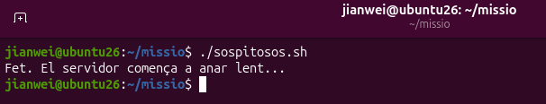
Figura 3.3 (Nivell 1 - Captura 1): Consulta de l'arbre de processos.
Comanda executada:pstree -p $USER
Descripció: Executem la comanda pstree -p $USER per veure l'arbre de processos del nostre usuari i identificar d'on pengen els processos creats.
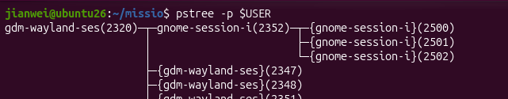
Figura 3.4 (Nivell 1 - Captura 2): Detall dels PIDs dels processos minador.
Descripció: Mirant la sortida de pstree, identificuem els PIDs dels dos processos minador que s'estan executant.
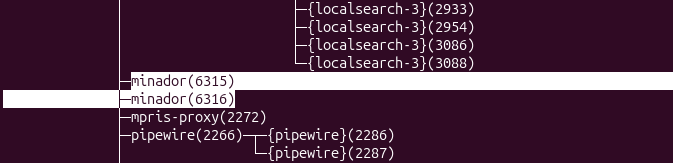
Figura 3.5 (Nivell 2 - Captura 1): Monitorització de recursos amb top.
Comanda executada:top
Descripció: Executem la comanda top per veure l'ús de recursos en temps real i comprovem que els dos processos minador són els que s'estan menjant la CPU.
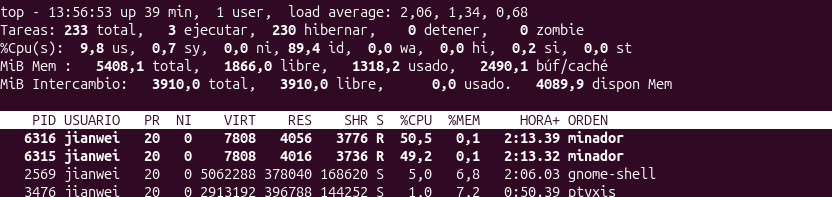
Figura 3.6 (Nivell 3 - Captura 1): Cerca de PIDs i detalls dels processos amb ps.
Comandes executades:pgrep -l 'minador|espia|backup' i ps -o pid,ppid,user,stat,etime,%cpu,comm -C minador,espia,backup_nocturn
Descripció: Executem pgrep per trobar els PIDs i després fem servir ps amb diferents opcions per veure l'estat exactament de cada procés i quin és el seu procés pare.
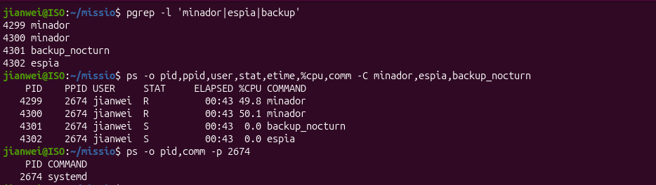
Figura 3.7 (Nivell 4 - Captura 1): Control de treballs en primer i segon pla.
Comandes executades:./descarrega.sh, Ctrl+Z, jobs -l, bg %1 i fg %1
Descripció: Executem la descàrrega, la pausem amb Ctrl+Z, comprovem el seu estat amb jobs -l i la passem a segon pla amb bg i a primer pla amb fg.
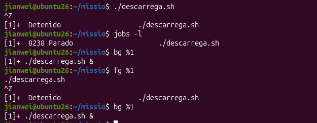
Figura 3.8 (Nivell 4 - Captura 2): Seguiment de la descàrrega en temps real.
Comanda executada:watch -n 1 cat progres.txt
Descripció: Executem la comanda watch -n 1 cat progres.txt des d'una altra terminal per anar veient com avança el fitxer de descàrrega cada segon.
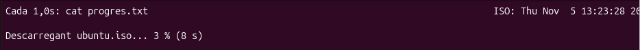
Figura 3.9 (Nivell 5 - Captura 1): Canvi de prioritat de la descàrrega amb renice.
Comanda executada:sudo renice -n -10 -p 8756
Descripció: Executem la comanda sudo renice -n -10 per donar-li més prioritat de CPU al procés de descàrrega i comprovem el canvi de valor NI al top.
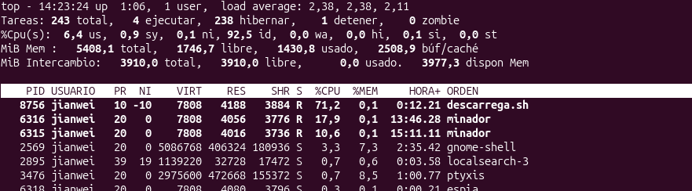
Figura 3.10 (Nivell 6 - Captura 1): Finalització forçada del procés espia.
Comandes executades:kill 6318 i kill -9 6318
Descripció: Executem primer kill normal per intentar tancar el procés espia i, com que no es tanca, executem kill -9 per matar-lo de forma forçada.
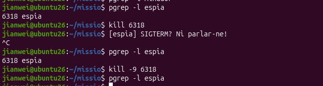
Figura 3.11 (Nivell 6 - Captura 2): Pausa de la còpia de seguretat amb SIGSTOP.
Comanda executada:kill -STOP 4985
Descripció: Executem kill -STOP sobre el procés de la còpia de seguretat per pausar la seva execució momentàniament.
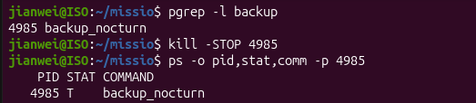
Figura 3.12 (Nivell 6 - Captura 3): Represa del procés pausat amb SIGCONT.
Comanda executada:kill -CONT 4985
Descripció: Executem kill -CONT per reprendre l'execució del procés de backup que teníem aturat.
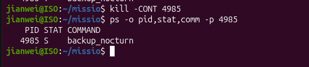
Figura 3.13 (Nivell 7 - Captura 1): Confirmació de la descàrrega completada.
Descripció: Comprovem a la pantalla del watch que la descàrrega s'ha completat correctament al 100%.
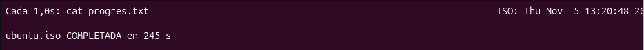
Figura 3.14 (Nivell 7 - Captura 2): Jerarquia del procés de descàrrega.
Comanda executada:pstree -ps $(pgrep descarrega)
Descripció: Executem pstree -ps per veure tota la línia de pares del procés de descàrrega fins arribar a systemd.
Figura 5.1 (Nivell 0 - Captura 1): Identificació de l'usuari actual i dels seus grups.
Comandes executades:whoami i id
Descripció: Executem les comandes whoami i id per saber quin usuari som exactament al sistema i veure a quins grups pertanyem, juntament amb els nostres UID i GID.
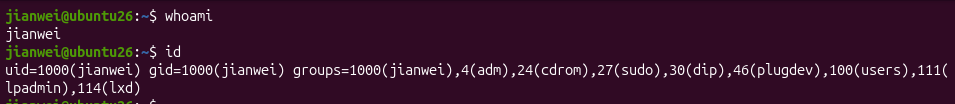
Figura 5.2 (Nivell 0 - Captura 2): Consulta de les dades de l'usuari a /etc/passwd.
Comanda executada:grep $USER /etc/passwd
Descripció: Executem la comanda grep $USER /etc/passwd per consultar la línia del nostre usuari al fitxer de comptes del sistema, on veiem la carpeta personal i la shell assignada.
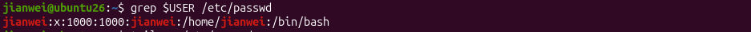
Figura 5.3 (Nivell 0 - Captura 3): Lectura del fitxer /etc/shadow directament com a root.
Comanda executada:cat /etc/shadow
Descripció: Executem la comanda cat /etc/shadow directament com a usuari root per poder veure el contingut del fitxer de contrasenyes del sistema sense restriccions de permisos.
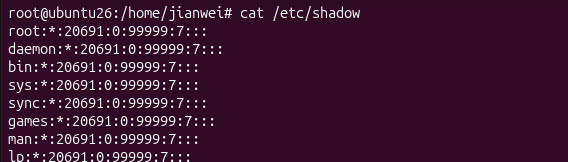
Figura 5.4 (Nivell 0 - Captura 4): Lectura de /etc/shadow amb permisos de root.
Comanda executada:sudo grep $USER /etc/shadow
Descripció: Executem la comanda sudo grep $USER /etc/shadow amb root per veure la diferència respecte al pas anterior, ja que com a usuari normal no teníem permisos per veure el hash de la contrasenya.
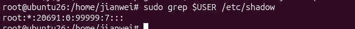
Figura 5.5 (Nivell 0 - Captura 5): Consulta dels usuaris del grup sudo.
Comanda executada:getent group sudo
Descripció: Executem getent group sudo per veure quins usuaris del sistema tenen permisos d'administrador i pertanyen al grup sudo.
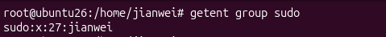
Figura 5.6 (Nivell 1 - Captura 1): Verificació de l'equip d'usuaris creats.
Comandes executades:getent passwd nuria pau marc laia i ls /home
Descripció: Executem getent passwd i ls /home per comprovar que tots els usuaris de l'estudi (nuria, pau, marc i laia) s'han creat correctament amb la seva carpeta a /home.
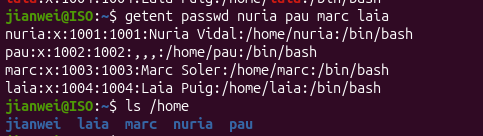
Figura 5.7 (Nivell 2 - Captura 1): Inici de sessió com a l'usuària nuria.
Comandes executades:su - nuria, whoami i pwd
Descripció: Executem su - nuria per canviar a la usuària Núria i comprovem amb whoami i pwd que s'ha carregat el seu entorn i estem a /home/nuria.
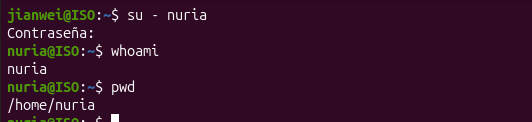
Figura 5.8 (Nivell 2 - Captura 2): Creació d'un fitxer de prova i comprovació de propietat.
Comandes executades:touch primer_dia.txt i ls -l
Descripció: Executem touch primer_dia.txt per crear un fitxer nou com a nuria i verifiquem amb ls -l que ella en queda registrada com a propietària.
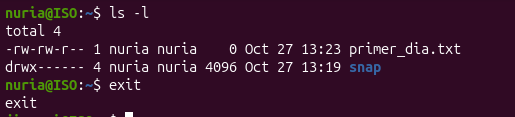
Figura 5.9 (Nivell 3 - Captura 1): Creació dels grups i simulació d'una erra de mecanografia.
Comandes executades:sudo groupadd progamadors i tail -5 /etc/group
Descripció: Executem groupadd per crear els grups de treball i creem a la vegada el grup progamadors amb una erra de mecanografia per veure com el corregim després.
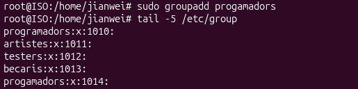
Figura 5.10 (Nivell 3 - Captura 2): Eliminació del grup mal escrit.
Comandes executades:sudo groupdel progamadors i getent group progamadors
Descripció: Executem sudo groupdel progamadors per esborrar el grup mal escrit i comprovem amb getent que ja ha hagut estat eliminat del sistema.
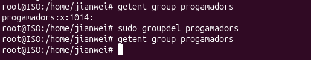
Figura 5.11 (Nivell 4 - Captura 1): Error habitual en utilitzar usermod -G sense -a.
Comandes executades:sudo usermod -G testers nuria i groups nuria
Descripció: Executem usermod -G testers nuria sense el flag -a per veure l'error típic on s'afegeix el nou grup però s'esborren els altres grups secundaris que teníem.
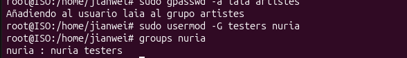
Figura 5.12 (Nivell 4 - Captura 2): Afegiment correcte de grups secundaris amb usermod -aG.
Comandes executades:sudo usermod -aG programadors nuria i groups nuria
Descripció: Executem usermod -aG programadors nuria amb el flag -aG per afegir la Núria al grup de programadors de forma segura sense perdre la resta de grups.
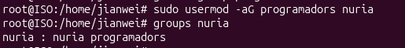
Figura 5.13 (Nivell 4 - Captura 3): Comprovació final dels membres dels grups.
Comanda executada:getent group programadors artistes testers becaris
Descripció: Executem aquesta comanda per llistar els departaments creats i comprovar que tots els usuaris han quedat ben assignats als seus grups.
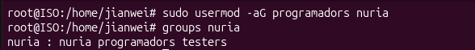
Figura 5.14 (Nivell 5 - Captura 1): Canvi de grup principal d'un usuari.
Comandes executades:sudo usermod -g programadors pau, id pau i ls -l
Descripció: Executem usermod -g programadors pau per canviar el grup principal d'en Pau i comprovem que els nous fitxers que crea passen a pertànyer a aquest nou grup.
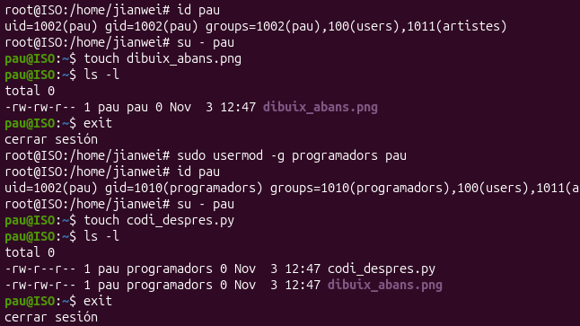
Figura 5.15 (Nivell 6 - Captura 1): Consulta del compte de Marc a /etc/shadow.
Comanda executada:sudo grep marc /etc/shadow
Descripció: Executem sudo grep marc /etc/shadow per inspeccionar la contrasenya xifrada d'en Marc abans d'aplicar-ne el bloqueig de seguretat.
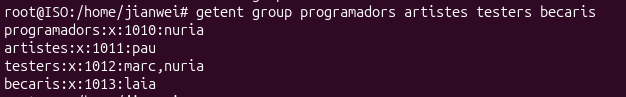
Figura 5.16 (Nivell 6 - Captura 2): Comprovació del bloqueig d'accés.
Comanda executada:su - marc
Descripció: Executem su - marc per intentar accedir al compte bloquejat d'en Marc i comprovem que el sistema ens mostra directament un fallo d'autenticació.
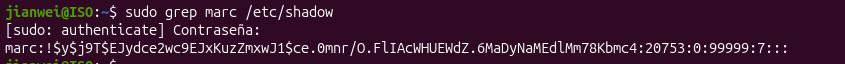
Figura 5.17 (Nivell 6 - Captura 3): Desbloqueig del compte amb passwd -u i inici de sessió d'èxit.
Comandes executades:sudo passwd -u marc, sudo passwd -S marc i su - marc
Descripció: Executem sudo passwd -u marc per treure el bloqueig de la contrasenya d'en Marc, verifiquem l'estat amb passwd -S i comprovem que ara ja pot tornar a iniciar sessió normalment.
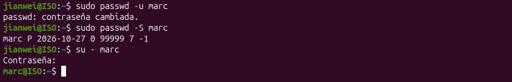
Figura 5.18 (Nivell 7 - Captura 1): Canvi de nom d'usuari mantenint l'UID.
Comandes executades:sudo usermod -l nvidal nuria, id nvidal i grep nvidal /etc/passwd
Descripció: Executem usermod -l nvidal nuria per canviar el nom d'usuari de nuria a nvidal i verifiquem amb id i /etc/passwd que manté el mateix UID (1001).
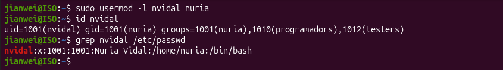
Figura 5.19 (Nivell 7 - Captura 2): Canvi de nom de grup i trasllat de la carpeta personal.
Comandes executades:sudo groupmod -n nvidal nuria, sudo usermod -d /home/nvidal -m nvidal, ls -l /home/nvidal i su - nvidal
Descripció: Executem groupmod -n per canviar el nom del seu grup personal, usermod -d -m per traslladar la seva carpeta personal a /home/nvidal i comprovem que pot iniciar sessió correctament.
Figura 6.1 (Nivell 0 - Captura 1): Creació de l'estructura inicial de directoris i fitxers.
Comandes executades:sudo mkdir -p /srv/pixelforge, cd /srv/pixelforge, sudo mkdir codi art proves compartit, sudo touch codi/joc.py art/logo.png proves/informe.txt i ls -l /srv/pixelforge
Descripció: Es crea la carpeta principal de l'estudi i les subcarpetes per a cada departament, verificant amb ls -l que inicialment la propietat pertany a l'usuari root.
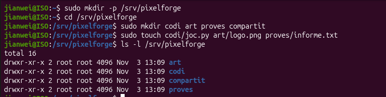
Nivell 1 · Llegir els permisos
Figura 6.2 (Nivell 1 - Captura 2): Lectura de permisos de directori i fitxer amb ls i stat.
Comandes executades:ls -ld /srv/pixelforge/codi i stat /srv/pixelforge/codi/joc.py
Descripció: S'inspecciona el directori amb ls -ld per visualitzar els permisos de la carpeta i es comprova amb stat la representació en mode octal (0644) i simbòlic (-rw-r--r--).
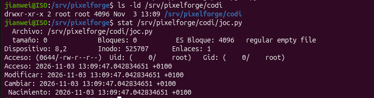
Nivell 2 · chmod numèric
Figura 6.3 (Nivell 2 - Captura 3.1): Aplicació de permisos octals recursius (750) al directori de codi.
Comandes executades:sudo chmod -R 750 /srv/pixelforge/codi, ls -ld /srv/pixelforge/codi i sudo ls -l /srv/pixelforge/codi
Descripció: S'estableixen els permisos 750 (rwxr-x---) de forma recursiva a la carpeta codi i al seu contingut.
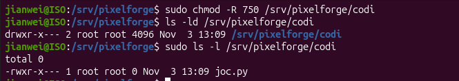
Figura 6.4 (Nivell 2 - Captura 3.2): Assignació de permisos a les carpetes d'art i informes de proves.
Comandes executades:sudo chmod 755 /srv/pixelforge/art, sudo chmod 640 /srv/pixelforge/proves/informe.txt i ls -l /srv/pixelforge/proves
Descripció: Es permet l'accés públic de lectura a la carpeta art (755) i es restrringeix l'informe de proves a mode privat per al grup (640).
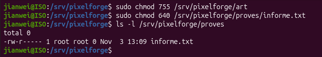
Nivell 3 · chmod simbòlic
Figura 6.5 (Nivell 3 - Captura 4.1): Eliminació del permís d'escriptura al propietari.
Comandes executades:sudo chmod u-w /srv/pixelforge/art i ls -ld /srv/pixelforge/art
Descripció: S'extreu el permís d'escriptura a l'usuari propietari mitjançant u-w, passant els permisos a dr-xr-xr-x.
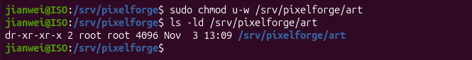
Figura 6.6 (Nivell 3 - Captura 4.2): Restabliment d'escriptura al propietari i restricció a la resta d'usuaris.
Comandes executades:sudo chmod u+w /srv/pixelforge/art, sudo chmod o= /srv/pixelforge/art i ls -ld /srv/pixelforge/art
Descripció: Es torna a afegir l'escriptura al propietari i s'eliminen tots els permisos per a la resta d'usuaris (o=), deixant el directori amb drwxr-x---.
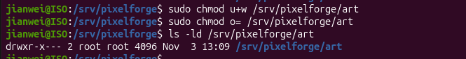
Nivell 4 · chown i chgrp · Donar les carpetes als equips
Figura 6.7 (Nivell 4 - Captura 5.1): Canvi de propietari i grup del directori de codi.
Comandes executades:sudo chown -R pau:programadors /srv/pixelforge/codi i ls -l /srv/pixelforge
Descripció: S'assigna recursivament l'usuari pau i el grup programadors com a propietaris del directori codi.
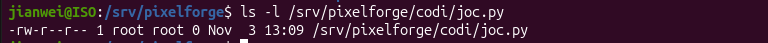
Figura 6.8 (Nivell 4 - Captura 5.2): Creació de fitxers com a propietari del directori.
Comandes executades:su - pau, cd /srv/pixelforge/codi, touch nivell1.py i ls -l
Descripció: Es comprova que l'usuari pau pot crear fitxers correctament a la seva carpeta de treball.
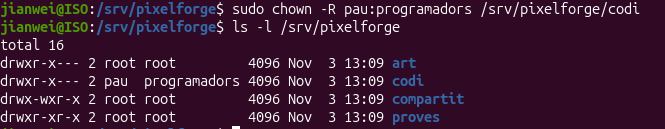
Figura 6.9 (Nivell 4 - Captura 5.3): Prova d'escriptura denegada en un directori d'un altre equip.
Comanda executada:touch /srv/pixelforge/proves/intrus.txt
Descripció: Es confirma que el sistema bloqueja l'intent d'escriptura de l'usuari pau a la carpeta proves (Permission denied).
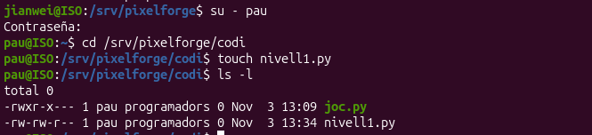
Nivell 5 · SGID · Que els fitxers nous siguin de l'equip
Figura 6.10 (Nivell 5 - Captura 6.1): Creació de fitxer sense el bit SGID actiu.
Comandes executades:su - nvidal, touch /srv/pixelforge/codi/mapa.py i ls -l /srv/pixelforge/codi/mapa.py
Descripció: En crear el fitxer mapa.py, aquest adopta el grup primari de l'usuari (nvidal) en comptes del grup del directori.
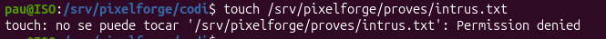
Figura 6.11 (Nivell 5 - Captura 6.2): Activació del bit SGID al directori de codi.
Comandes executades:sudo chmod g+s /srv/pixelforge/codi i ls -ld /srv/pixelforge/codi
Descripció: S'activa el bit SGID (g+s), visible amb la lletra s a la posició de permisos de grup (drwxrws---).
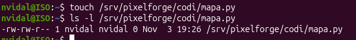
Figura 6.12 (Nivell 5 - Captura 6.3): Verificació de l'herència automàtica de grup amb SGID.
Comandes executades:su - nvidal, touch /srv/pixelforge/codi/so.py i ls -l /srv/pixelforge/codi
Descripció: Es comprova que el nou fitxer so.py hereta automàticament el grup programadors del directori pare.
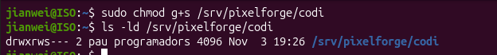
Nivell 6 · Sticky Bit · La carpeta compartida
Figura 6.13 (Nivell 6 - Captura 7.1): Assignació del Sticky Bit a la carpeta compartida.
Comandes executades:sudo chmod +t /srv/pixelforge/compartit i ls -ld /srv/pixelforge/compartit
Descripció: S'aplica el permís +t sobre la carpeta amb permisos 777, mostrant la lletra t al final (drwxrwxrwt).
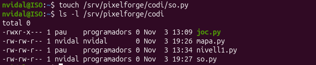
Figura 6.14 (Nivell 6 - Captura 7.2): Bloqueig d'esborrat de fitxers d'altres usuaris per Sticky Bit.
Comandes executades:su - pau, touch /srv/pixelforge/compartit/de_pau.txt, su - marc i rm /srv/pixelforge/compartit/de_pau.txt
Descripció: En intentar esborrar el fitxer creat per en Pau, l'usuari Marc rep l'error Operación no permitida / Operation not permitted gràcies a la protecció del Sticky Bit.
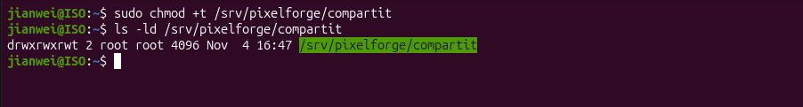
Nivell 7 · ACL · Accés per a una persona de fora
Figura 6.15 (Nivell 7 - Captura 8.1): Accés inicial denegat a l'usuari tester.
Comandes executades:su - marc i ls /srv/pixelforge/codi
Descripció: Es comprova que l'usuari marc no pot accedir ni veure el contingut del directori codi (Permission denied).
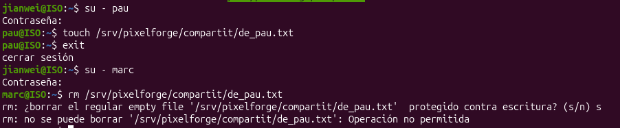
Figura 6.16 (Nivell 7 - Captura 8.2): Assignació d'ACL de lectura i execució amb setfacl.
Comandes executades:sudo setfacl -m u:marc:rx /srv/pixelforge/codi, ls -ld /srv/pixelforge/codi i getfacl /srv/pixelforge/codi
Descripció: S'assigna la regla ACL u:marc:rx. El directori mostra el signe + als permisos i getfacl confirma la línia user:marc:r-x.
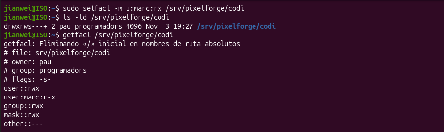
Figura 6.17 (Nivell 7 - Captura 8.3): Comprovació d'accés efectiu de l'usuari amb ACL.
Comandes executades:su - marc, ls /srv/pixelforge/codi i exit
Descripció: L'usuari Marc ja pot llistar correctament els fitxers de la carpeta de codi.
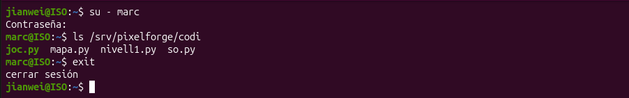
Figura 6.18 (Nivell 7 - Captura 8.4): Revocació de la regla ACL amb setfacl -x.
Comandes executades:sudo setfacl -x u:marc /srv/pixelforge/codi i getfacl /srv/pixelforge/codi
Descripció: S'elimina la regla d'accés individual per a en Marc i es comprova amb getfacl que la línia ha estat suprimida.
Nivell 8 · umask i SUID
Figura 6.19 (Nivell 8 - Captura 9.1): Configuració de la màscara umask 027.
Comandes executades:umask 027, touch prova2.txt, mkdir prova2_dir i ls -ld prova2.txt prova2_dir
Descripció: En establir la màscara 027, els nous fitxers es creen amb permisos 640 (rw-r-----) i els directoris amb 750 (rwxr-x---), restringint l'accés a la resta d'usuaris.
Figura 6.20 (Nivell 8 - Captura 9.2): Identificació del bit SUID en programes executables.
Comandes executades:ls -l /usr/bin/passwd i find /usr/bin -perm -4000 2>/dev/null
Descripció: Es visualitza la lletra s a la posició d'execució de l'usuari propietari a /usr/bin/passwd i es cerca la llista d'executables del sistema amb el bit SUID (-4000) actiu.